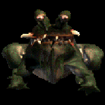

|  |
The ancient King of the Lupoggs lords over these dark caves, knowing no creature to be its equal. The rock walls rumble and shake whenever this monstrosity wails. You feel as though you have already outlived most people who encounter the Lupogg King, but that thought does not comfort you any.
|
||||||||